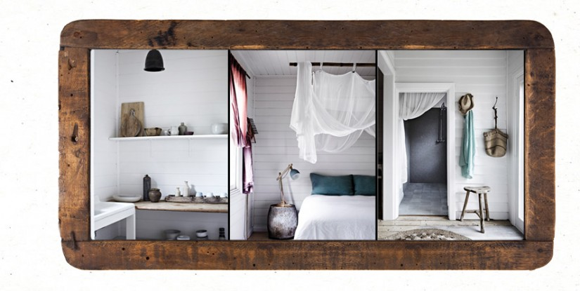

Features
Accommodation - House
2 living spaces with wood burning fireplaces, linen sofas, vintage furniture, art works and lighting all personally sourced from all corners of the globe. TV’s, DVD, IPod dock & complementary Wi-Fi
Vintage French dining table seats 10-12
Brand new fully equipped Kitchen includes, mud ceramic tableware, French glassware, coffee machine, Smeg oven, fridge & dishwasher
2 bathrooms including Uchino Japanese bath towels & Australian organic hand & body wash
All bedrooms are spacious and light-filled; they are elegantly decorated with chalk white walls, lime wash floors, Bedouin Societe linen, feather pillows & treasured objects


Chalk white walls, waxed floorboards, wood burning heater, queen size bed, Bedouin Societe linen, feather pillows, fully equipped kitchenette & bathroom. Beautifully decorated with linen sofa & provincial antiques. French doors opening to the surrounding garden & sea views

Veg Out in our Herb & Vegetable Gardens
Please help yourself to our two large kitchen gardens, filled with fragrant herbs, vegetables, berries, citrus and stone fruit trees. Notes are provided & updated weekly on what is in season for you to pick and add to your lunch or evening meal
Children’s Play Ground
- Fully equipped children’s play ground